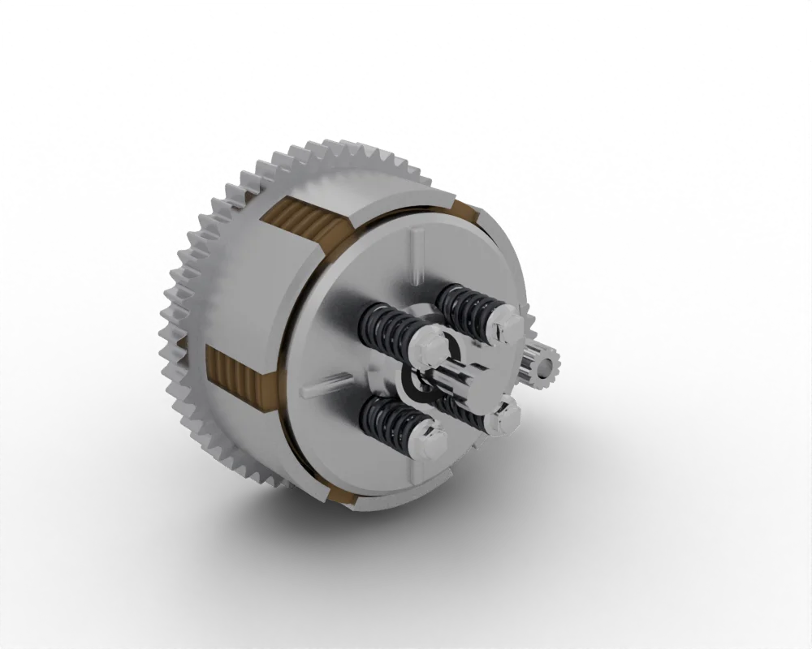

A motorcycle turns stored energy into a push at the rear tyre, then lets the rider steer, stop and control it. Everything on it belongs to one of six systems.
The easiest way to understand how the parts fit is to follow the energy from the tank to the road.
TankPetrol stores about 43 MJ per kg.
Carburettor or injectorMixes fuel with air, about 14.7 to 1 by mass.
EngineBurns the mixture and turns the crankshaft.

Clutch and gearboxConnect the engine and choose the ratio.
ChainCarries the drive to the rear wheel.
Rear tyrePushes on the road through a patch smaller than a credit card.
Only about a fifth of the energy in the fuel reaches the road. A small air-cooled engine turns at best about 30 % of it into work at the crankshaft, and the clutch, gearbox and chain lose a little more. The rest leaves as heat through the exhaust, the cylinder fins and the oil.
The electric version
An electric motorcycle swaps the tank, engine, clutch and gearbox for three parts: a battery pack that stores the energy, a controller that turns the battery's direct current into three-phase current, and a motor that turns. The chassis, wheels and brakes are the same. About 80 to 88 % of the battery's energy reaches the wheel, but a battery stores far less energy per kilo than petrol, so range is shorter.
All three put the heaviest part low and between the wheels, a layout settled by the Werner brothers in 1901. Want to see how they differ part by part? Build one in the Bike builder, or compare sixteen motorcycle types.
Remember
Six systems: power unit, fuel and air, ignition and electrics, transmission, chassis, controls.
Energy flows tank, engine, clutch, gearbox, chain, tyre.
Electric: battery, controller, motor; the rest stays the same.
A two-stroke does the same job in one turn: ports in the cylinder wall replace the valves, so it fires every revolution. It is lighter and more powerful for its size, but burns oil with the fuel and pollutes more. See it in 3D →
Torque, power and a little maths
Torque is the turning force at the crankshaft, in newton metres. Power is how fast that work is done: torque times rotational speed.
P (kW) = T (N·m) × 2π × n (rpm) ÷ 60 ÷ 1000
Power 7.0 kW(9.5 PS)
The K-Light 125 makes 8.9 N·m at 7,500 rpm, which is 7.0 kW. Its peak power, 7.8 kW, comes higher up at 9,000 rpm.
Fuel and spark
The carburettor uses the fast air through a narrow throat (the venturi) to draw fuel from a jet. The throttle opens a slide or butterfly to let more mixture in. Fuel injection does the same with a pump, an injector and a computer.
The ignition turns 12 V into a spark of 10,000 to 30,000 V. A pickup on the crankshaft tells the CDI or ECU where the piston is; it switches the coil, and the spark jumps the plug's gap at the right moment, 10 to 40° before the top.
Clutch, gearbox and chain
The five-speed gearbox: red gears slide, blue gears spin free. Shift it yourself →
The clutch is a stack of friction and steel plates squeezed by springs. Pull the lever and the plates separate, so the engine turns without driving the wheel. The gearbox gives five or six ratios: first multiplies torque for pulling away and climbing, top gives speed. The chain adds the final reduction. A 15-tooth front sprocket driving a 41-tooth rear turns the wheel 2.7 times slower than the gearbox output.
What a gear ratio does
When a small gear drives a big gear, the big one turns more slowly but with more force. Count the teeth: a 13-tooth gear driving a 36-tooth gear must turn 36 ÷ 13 = 2.8 times for the big gear to turn once. That number is the gear ratio. You trade speed for force, like using a long spanner on a tight bolt.
Teeth13 : 36
Gear ratio2.77 : 1
Force at the wheel197 N·m
Speed at 8,000 rpm30 km/h
A motorcycle has three of these steps in a row. The primary drive (crank to clutch) slows the engine about 3.7 times, the gearbox adds the ratio you choose with your foot, and the chain sprockets add about 3 more. Multiply them and in 1st the engine turns about 32 times for each turn of the rear wheel, so 8.9 N·m at the crank becomes about 250 N·m at the tyre. In 5th it is about 11 times: less force, much more speed.
Try it: a bigger rear sprocket works like a lower gear in every gear: more pull for loads and hills, less top speed. Change the sprockets in Under the Engine or the Bike builder.
Brakes and suspension
Squeeze the lever and a small piston pushes brake fluid down the hose. Because fluid does not compress, a bigger piston in the caliper clamps the pads onto the disc. The bike's movement turns into heat. Most stopping power is at the front, because the weight moves forward when you brake.
The fork and rear shock each have a spring to carry the weight and a damper, oil forced through small holes, to stop the bounce.
Electric drive
The motor's magnets follow a magnetic field that the controller rotates by switching six transistors on and off thousands of times a second. Full torque is there from standstill, so there is no clutch and usually one fixed ratio. When you brake, the motor can work as a generator and put some energy back in the battery (regenerative braking). The BMS watches every cell and cuts the power if a cell is too hot, too full or too empty.
Remember
Four strokes: intake, compression, power, exhaust; only power does work.
Power = torque × speed. Gears trade speed for torque.
An engine needs fuel and air, a spark at the right time, and compression.
Engine off, key out, bike on its stand. Run engines only outside or with the exhaust piped away: exhaust gas contains carbon monoxide.
No flames near petrol or batteries. A charging battery gives off explosive gas.
Hot parts burn. Let the exhaust and engine cool.
Electric bikes: packs above 60 V DC are high voltage, and many 60 to 96 V scooter packs are. Only trained people open them, after isolating and checking for zero volts.
Four rules of fault finding
Ask and look. When did it start? What changed? Look for leaks, loose wires and damage.
Cheapest and easiest first. Fuel in the tank, kill switch at RUN, fuses, battery, connections. Then the harder checks.
Measure, do not guess. A multimeter, a tyre gauge and a ruler settle most arguments.
Change one thing at a time, then test again, so you know what fixed it.
Engine will not start? Work down the list
An engine needs three things: the right mixture, a spark at the right time and compression. Check them in this order.
Does it crank? Press the starter.
No sound: check the kill switch, side stand, neutral or clutch, fuses, then the battery. Clicks only: battery flat or the starter relay. Starting problems →
Battery healthy? Measure with a multimeter.
Rested battery: 12.8 V or more is charged, 12.3 V or less needs charging. While cranking it should stay above about 9.6 V. Running at 5,000 rpm, the charging system should give 14.0 to 15.0 V. Battery repairs →
Fuel getting through?
Fuel in the tank, tap on, tank vent clear, fuel reaching the carburettor or injector. Old fuel and a blocked jet are common after storage. Carburettor repairs →
Spark? Test with the plug earthed on the engine.
A strong blue spark is good; weak orange or none points to the plug, cap, coil, pickup or CDI. Read the plug: light brown is healthy, black and sooty is rich, white is lean. Spark plug repairs →
Compression? Last, because it needs a gauge.
K-Light 125: 1.0 to 1.2 MPa when cranking. Low compression means valves not closing (check the clearance) or worn rings. All repairs →
Read the smoke
BlueBurning oil: worn rings, valve guides or seals, or too much oil.
BlackToo rich: blocked air filter, choke on, leaking injector or carburettor.
White that stays when warmCoolant burning on liquid-cooled engines: head gasket.
Check before every ride: T-CLOCS
TTyres and wheels: pressure cold, tread, damage, brakes working
CControls: levers, cables, throttle snaps shut
LLights and electrics: beams, brake light, indicators, horn
OOil and fluids: engine oil, brake fluid, fuel, leaks
CChassis: suspension, chain slack and oil, bolts
SStands: spring back; side-stand switch cuts the engine


 TankPetrol stores about 43 MJ per kg.
TankPetrol stores about 43 MJ per kg. Carburettor or injectorMixes fuel with air, about 14.7 to 1 by mass.
Carburettor or injectorMixes fuel with air, about 14.7 to 1 by mass. EngineBurns the mixture and turns the crankshaft.
EngineBurns the mixture and turns the crankshaft. ChainCarries the drive to the rear wheel.
ChainCarries the drive to the rear wheel. Rear tyrePushes on the road through a patch smaller than a credit card.
Rear tyrePushes on the road through a patch smaller than a credit card. Four-stroke roadsterCommuter and taxi bikes
Four-stroke roadsterCommuter and taxi bikes
 Electric scramblerBattery, controller, motor
Electric scramblerBattery, controller, motor


 Chain slack
Chain slack Battery test
Battery test